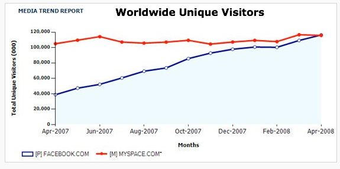
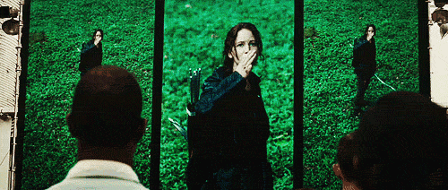

The Psychology of #FakeNews
And what tech can do about it
@cecycorreaFuture of Fake News
Site done by Radiolab
News footage live re-enactment
Project Voco
<<<<<<< HEADAudio software from Adobe that lets editors modify audio.
=======Audio software from Adobe that lets modify audio.
>>>>>>> gh-pages
With great power comes great responsibility

Engineers were just trying to solve a problem
This is still the future...
Voco has not been released...yet
Radiolab: Ep. Breaking News
=======Breaking News
>>>>>>> gh-pagesRecent Radiolab episode about the future of fake news.
The present
We are segregated by ideology
The bubble
How did we get to the bubble?
Social media is to blame!
Selective feeds
üëâBlocking
üëâLink previews
üëâClickbait
üëâCoverage is based on what is most likely to get a click
Established outlets
source: @JohnLegum
AP news story
Fox News
Stacked together
source: Clay Johnson
Fake news site
source: buzzfeed
Fake News as a Business
source: jestincoler.com
BUT!
Historical data
2008 election
Facebook was 4 years old at this time
Just overtaken MySpace as the leading social network in April of 2008!
source: techcrunch
2016 election
So, is it tech's fault?
1996 doesn't look like this
Fake news has been around for a long time

clickbait == yellow journalism
est. 1890s
These types of stories sell

The psychology
System 1 / System 2 thinking
source: Thinking Fast and Slow, Daniel Kahneman
System 1
Fast, automatic, intuitive.
☝️Beliefs
System 2
Analytical, reasoning
System 1
Unconcious bias
Beliefs
It's as hard to unlearn a belief as it is hard to unlearn how to ride a bike
The Knowledge Illusion
As a rule, strong feelings about issues do not emerge from deep understanding... but it deepens as more people believe this together
source: The Knowledge Illusion
How much do we understand?
We are wired to have shallow knowledge
As people invented new tools for new ways of living, they simultaneously created new realms of ignorance; if everyone had insisted on, say, mastering the principles of metalworking before picking up a knife, the Bronze Age wouldn’t have amounted to much.
Study: Draw a bike
- How well do you know bikes?
- Draw a bike
- How well do you know bikes?
It's not until people experience their lack of knowledge on their own, that people can realize how little they know on a specific topic.
Our knowledge is shallow
By design
Evolutionary response to our changing world
The shallower the knowledge, the deeper the belief
How often do we consume information that challenges our beliefs?
Information Diet
source: Clay Johnson
Information you agree with == stimulating
üçïdeliciousInformation that is challenging == not stimulating
ü•ó not yummyMore likely to consume information we agree with
aka confirmation bias
Put it all together
Why is it harder to consume information that is challenging?
Requires System 2 thinking
Information we agree with == System 1
Easier to consume ☝️
- Our knowledge is shallow
- We don't realize it is shallow until we experience our lack of knowledge
- We are not likely to seek this information out (requires System 2 thinking)
- Easier to consume information we agree with (junk food is delicious)
That's how the bubble is made

So, is it tech's fault?
No, because we are wired to think this way
Yes, because tools facilitate this
Shallow knowledge
We can look up anything on the internet
We don't need to know anything!
Results are tailored
Results are tailored

[t]he Internet was done so well that most people think of it as a natural resource like the Pacific Ocean, rather than something that was man-made. When was the last time a technology with a scale like that was so error-free?
— Alan Kay

It's both a human problem, and a tech problem
What can we do?
Human solutions
Media and tech literacy
Learning how to have meaningful discourse
Remember, people have to experience our shallow knowledge
Daryl Davis
source: Love + Radio: How to Argue
Tech solutions
Perspective API
[the] API uses machine learning models to score the perceived impact a comment might have on a conversation.
source: perspectiveapi.com
Outside the Bubble
Blue Feed, Red Feed
Knight Foundation
Sponsoring more projects that tackle Fake News
source: knightfoundation.org
Thinking more about psychology and behavior surrounding the tech we build
Purpose-driven companies
The current technology and venture capital structure is broken. It rewards quantity over quality, consumption over creation, quick exits over sustainable growth, and shareholder profit over shared prosperity. It chases after “unicorn” companies bent on “disruption” rather than supporting businesses that repair, cultivate, and connect [...]
...'The business model is the message.' From that business model flows company culture and beliefs [...] and, ultimately, the very shape of society.
source: qz.com
Zebra companies
- Unicorns aren't real, zebras are
- Zebra companies are both black and white: they are profitable and improve society. They won’t sacrifice one for the other.
More of this!
Less of this
An app won’t address the homelessness crisis in San Francisco or unite bitterly divided partisan politicians. The obstacle is that we are not investing in the process and time it takes to help institutions adopt, deploy, and measure the success of innovation.
source: qz.com
Less of this
Disruption is fast
sustainable, long-term change takes time
Thank you!
slides
cecy.co/fake-news-psych